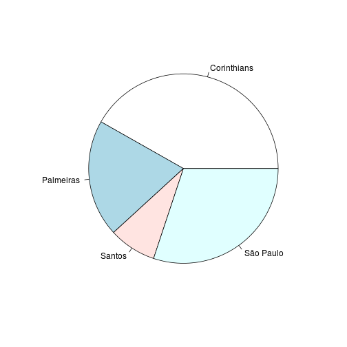
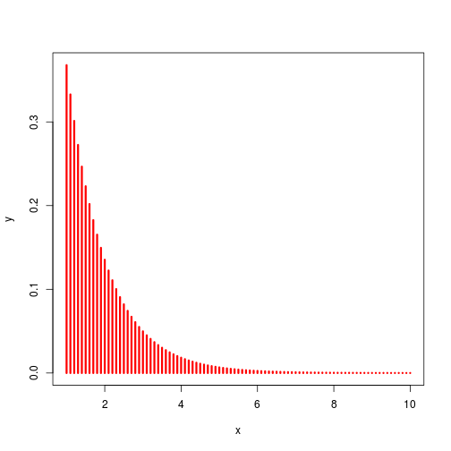
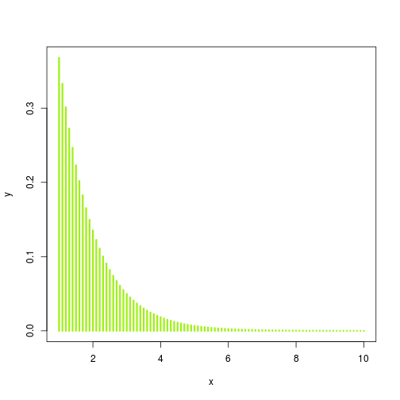
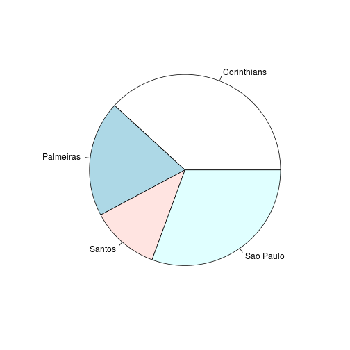

-
Aula 02 - Estruturas de Dados e Vocabulário
2015-01-21
SourceEstruturas de dados no R
Tipos básicos de estrutura no R:
- Atomic vector: homogêneo e unidimensional
- Matriz: homogêneo e bidimensional
- Array: homogêneo e multidimensional
- Lista: heterogêneo
- Data frame: heterogêneo
Nota: em sua implementação, atomic vectors e matrizes são também arrays e data frames são listas.
Atomic Vectors
Atomic vectors são a estrutura de objetos mais simples do R, caracterizados por "não terem dimensão".
Tipos de atomic vectos:
- lógico
- integer
- double
- complexo
- character
Exemplos:
dbl_var <- c(1, 2.5, 4.5) #DOUBLE # Com o sufixo L temos números inteiros em vez de double int_var <- c(1L, 6L, 10L) # Use TRUE ou FALSE (T ou F) para vetores lógicos log_var <- c(TRUE, FALSE, T, F) chr_var <- c("essas são", "algumas strings")Curiosidade: na função
c(), o c é de concatenate.Para saber qual é o tipo de um objeto, utilizamos a função
typeof().typeof(dbl_var)## [1] "double"typeof(int_var)## [1] "integer"typeof(log_var)## [1] "logical"typeof(chr_var)## [1] "character"As funções
is.integer(),is.double(),is.logical(),is.character()são usadas para testar se um objeto é de um determinado tipo.is.integer(dbl_var)## [1] FALSEis.double(dbl_var)## [1] TRUEis.numeric(dbl_var)## [1] TRUEis.logical(log_var)## [1] TRUEis.character(chr_var)## [1] TRUENote que a função
is.numeric()retornaTRUEtanto para objetos double quanto para integer.Coerção
Quando dois tipos de objetos são inseridos uma estrutura homogênea (atomic vectors, arrays ou matrizes), o R converte converterá o objeto para o tipo mais flexível, na ordem:
- logical
- integer
- double
- character
Na lista acima, character é o tipo mais flexível.
c("a", 1)## [1] "a" "1"c(T, 1)## [1] 1 1Isso pode ser útil, por exemplo, para contar o número de TRUEs em um vetor lógico:
sum(c(T, F, T, F, T))## [1] 3Factors
Factors são utilizados para armazernar dados categorizados e são caracterizados por:
- conterem apenas valores pré-definidos, chamados levels; e
- se basearem num vetor de inteiros.
f <- factor(c("aventura", "terror", "comédia", "drama")) f## [1] aventura terror comédia drama ## Levels: aventura comédia drama terrorlevels(f)## [1] "aventura" "comédia" "drama" "terror"Observe que, dentro do objeto, os levels são organizados em ordem alfabética.
Sempre tome cuidado ao converter factors em objetos numéricos:
f <- factor(c("2", "3", "1", "10")) as.numeric(f) # não funciona## [1] 3 4 1 2as.numeric(as.character(f)) # funciona## [1] 2 3 1 10Matrizes e Arrays
Matrizes e arrays são definidos usando as funções
matrix()earray().# Um vetor para descrever todas as dimensões arr <- array(1:12, c(3,2,2)) # Dois argumentos para determinar o número de linahs e colunas mat <- matrix(1:6, ncol = 3, nrow = 2)Diferentemente dos atomic vectors, essas estruturas apresentam o atribuito dimensão.
Nota: observe que uma matriz é um array com duas dimensões.
As funções
length(),dim(),nrow(),ncol()são usadas para determinar o comprimento de cada dimensão de um objeto.dim(c(1,2,3))## NULLnrow(c(1,2,3))## NULLncol(c(1,2,3))## NULLlength(c(1,2,3))## [1] 3dim(arr)## [1] 3 2 2length(arr)## [1] 12nrow(arr)## [1] 3ncol(arr)## [1] 2dim(mat)## [1] 2 3length(mat)## [1] 6nrow(mat)## [1] 2ncol(mat)## [1] 3Listas e Data frames
Listas são definidas usando a função
list().list( c(1:5), c("homem", "mulher"), c(T, F, T), list(c(1,2,3), c("a", "b", "c")) )## [[1]] ## [1] 1 2 3 4 5 ## ## [[2]] ## [1] "homem" "mulher" ## ## [[3]] ## [1] TRUE FALSE TRUE ## ## [[4]] ## [[4]][[1]] ## [1] 1 2 3 ## ## [[4]][[2]] ## [1] "a" "b" "c"Data frames são listas em que todos os elementos têm o mesmo comprimento. São definidos usando a função
data.frame().df <- data.frame(x = 1:4, y = c("oi", "oi", "oi", "oi"), z = T) df## x y z ## 1 1 oi TRUE ## 2 2 oi TRUE ## 3 3 oi TRUE ## 4 4 oi TRUEstr(df)## 'data.frame': 4 obs. of 3 variables: ## $ x: int 1 2 3 4 ## $ y: Factor w/ 1 level "oi": 1 1 1 1 ## $ z: logi TRUE TRUE TRUE TRUEEm um data frame, os caracteres são convertidos em factors. Se essa conversão é indesejável, use o argumento
stringAsFactors = Fdf <- data.frame(x = 1:4, y = c("oi", "oi", "oi", "oi"), z = T, stringsAsFactors = F) str(df)## 'data.frame': 4 obs. of 3 variables: ## $ x: int 1 2 3 4 ## $ y: chr "oi" "oi" "oi" "oi" ## $ z: logi TRUE TRUE TRUE TRUESe usarmos a função
names()obtemos o nome das colunas do data frame. Também é possível mudar o nome das colunas:names(df)## [1] "x" "y" "z"names(df) <- c("a", "b", "c") names(df)## [1] "a" "b" "c"Combinando data frames
É possível combinar data frames usando as funções
rbind()ecbind():df1 <- data.frame(x = 1:4, y = c("s", "s", "s", "s"), z = T) df2 <- data.frame(x = 1:2, y = c("n", "n"), z = F) rbind(df1, df2)## x y z ## 1 1 s TRUE ## 2 2 s TRUE ## 3 3 s TRUE ## 4 4 s TRUE ## 5 1 n FALSE ## 6 2 n FALSEcbind(df1, df2)## x y z x y z ## 1 1 s TRUE 1 n FALSE ## 2 2 s TRUE 2 n FALSE ## 3 3 s TRUE 1 n FALSE ## 4 4 s TRUE 2 n FALSESubsetting no R
Chamamos de subsetting a seleção de um subconjunto de um objeto. No R, existem três tipos principais de operação de subsetting:
a) Números inteiros positivos:
Retorna os elementos do vetor associados aos índices especificados.
x <- c(13, 8, 5, 3, 2, 1, 1) x[c(1,2,3)] # seleciona os três primeiros elementos do vetor## [1] 13 8 5order(x) # devolve a ordem dos elementos do vetor## [1] 6 7 5 4 3 2 1x[order(x)] # seleciona os elementos do vetor em ordem crescente## [1] 1 1 2 3 5 8 13b) Números inteiros negativos.
Exclui o elemento do vetor pelo índice selecionado.
x[-c(2, 5,6)]## [1] 13 5 3 1c) Vetores lógicos.
TRUE seleciona, FALSE não seleciona.
x == 1## [1] FALSE FALSE FALSE FALSE FALSE TRUE TRUEx[x==1]## [1] 1 1x > 5## [1] TRUE TRUE FALSE FALSE FALSE FALSE FALSEx[x>5]## [1] 13 8Existem outros tipos de subsetting pouco (ou nada) utilizados:
x[] # retorna o próprio objeto## [1] 13 8 5 3 2 1 1x[0] # retorna um objeto de tamanho 0## numeric(0)Quando o objeto tem mais de uma dimensão, utilizamos a "," para selecionar valores dentro de cada dimensão.
m <- matrix(c(1:5, 11:15), nrow=5, ncol=2) m## [,1] [,2] ## [1,] 1 11 ## [2,] 2 12 ## [3,] 3 13 ## [4,] 4 14 ## [5,] 5 15m[5,2] # Retorna o elemento especificado pelos índices.## [1] 15m[,1] # Retorna todos os elementos da coluna 1.## [1] 1 2 3 4 5m[3,] # Retorna todos os elementos da linha 3.## [1] 3 13m[m%%2 == 0] # Retorna os elementos pares.## [1] 2 4 12 14Um ponto importante é que é possível alterar valores usando subsetting, por exemplo:
x <- c(13, 8, 5, 3, 2, 1, 1) x[x>5] <- 0 x## [1] 0 0 5 3 2 1 1Um pouco mais de funções: funcionais
Funcionais são funções que têm outras funções como parâmetro. Elas são úteis para que possamos, por exemplo, aplicar funções a pedaços dos dados que estamos trabalhando. No R elas são especialmente úteis por conta da vetorização.
Se temos, por exemplo, uma função complexa a ser aplicada a cada elemento de uma lista, por exemplo
lista <- as.list(1:10) f_complexa <- function(x) { return(c(x, x^2)) }Uma maneira enxuta de fazer isso é utilizando a função
lapply, que aplica a funçãof_complexaem cada elemento delista, assimlapply(lista, f_complexa)## [[1]] ## [1] 1 1 ## ## [[2]] ## [1] 2 4 ## ## [[3]] ## [1] 3 9 ## ## [[4]] ## [1] 4 16 ## ## [[5]] ## [1] 5 25 ## ## [[6]] ## [1] 6 36 ## ## [[7]] ## [1] 7 49 ## ## [[8]] ## [1] 8 64 ## ## [[9]] ## [1] 9 81 ## ## [[10]] ## [1] 10 100Digite
?lapplypara mais detalhes. Note que são vários os tipos de funcionais no pacotebasedo R. Esse assunto será retomado quando falarmos deplyredplyr, que são pacotes que simplificam e generalizam a sintaxe dessas funções.Leitura de dados
Para ler um banco de dados no R usamos a função
read.table(). A seguir estão os principais argumentos dessa função e sua descrição:file =é uma string contendo o caminho do arquivo quem contem os dados, por exemplo: "C://users/daniel/Desktop/text.txt".header =recebe um valor lógico (TRUEouFALSE) e indica para o programa se o seu arquivo inclui o nome das variáveis no topo.sep =é a string utilizada para separar o valor de cada coluna dentro do arquivo de entrada. Se o arquivo tiver extensão .csv, o argumentosep=assume "," ou ";". Outros separadores geralmente utilizados são os espaços (" "), o caracter "|" e a tabulação "\t".quote =indica qual o caractere que identifica strings no seu arquivo. Na maioria das vezes, não é necessário alterar, pois é padrão utilizar aspas '""'.dec =é uma string indicando qual o separador de casa decimais no seu arquivo. IMPORTANTE: quando o arquivo é lido, o R troca o separador de decimais para "." mesmo que você tenha indicado ",". A melhor maneira de verificar se o arquivo foi lido corretamente é fazerstr(dados)e ver se as variáveis numéricas estão marcadas como numéricas. IMPORTANTE 2: o R não entende separadores de milhares. O ideal é substituí-los antes da importação.stringsAsFactors =recebe um valor lógico e indica ao R se as colunas com strings devem ser transformadas em fatores, que, como vimos anteriormente, não são muito fáceis de serem trabalhados. Se quiser que este comportamento seja desligado basta usar esse argumento comoFALSE.
Dito tudo isso, vamos ler o arquivo arq.txt que se encontra na pasta assets/dados/.
#dados <- read.table(file = "assets/dados/arq.txt") # li erradoObserve que a função retornou um erro e não leu o arquivo. Isso aconteceu porque o arquivo arq.txt tem os seus valores separados por ";" e o default do argumento
sep =é o espaço.dados <- read.table(file = "assets/dados/arq.txt", sep = ";") str(dados)## 'data.frame': 101 obs. of 3 variables: ## $ V1: Factor w/ 11 levels "-0,0907448251260999",..: 11 4 10 5 3 1 8 2 9 7 ... ## $ V2: Factor w/ 101 levels "0,00994513742625713",..: 101 27 84 32 76 37 3 2 79 40 ... ## $ V3: Factor w/ 4 levels "amarelo","azul",..: 3 2 4 1 2 1 1 1 1 1 ...Dessa vez o arquivo foi lido e os dados foram salvos no objeto
dados. No entanto, com o auxílio da funçãostr()verificamos que as duas primeiras colunas, que deveriam ser numéricas, foram lidas como fatores. Isso aconteceu porque o separador de casa decimais no arquivo é a "," e, por default o R utiliza o ".". Dessa forma, ao encontrar uma vírgula entre os números, o R entende essa sequência de caracteres como uma string.dados <- read.table(file = "assets/dados/arq.txt", sep = ";", dec = ",") str(dados)## 'data.frame': 101 obs. of 3 variables: ## $ V1: Factor w/ 11 levels "-0,0907448251260999",..: 11 4 10 5 3 1 8 2 9 7 ... ## $ V2: Factor w/ 101 levels "0,00994513742625713",..: 101 27 84 32 76 37 3 2 79 40 ... ## $ V3: Factor w/ 4 levels "amarelo","azul",..: 3 2 4 1 2 1 1 1 1 1 ...Mesmo especificando o argumento
dec =como ",", os dados não estão sendo lidos da maneira correta. Observe que o nome das colunas estão sendo lidos como se fossem um valor de cada variável. Para corrigir isso, devemos utilizarheader = T.dados <- read.table(file = "assets/dados/arq.txt", sep = ";", dec = ",", header = T) str(dados)## 'data.frame': 100 obs. of 3 variables: ## $ Aleatorio : num -0.7158 1.9053 0.8586 -0.7131 -0.0907 ... ## $ aleatorio2: num 0.297 0.876 0.324 0.824 0.379 ... ## $ cor : Factor w/ 3 levels "amarelo","azul",..: 2 3 1 2 1 1 1 1 1 3 ...Agora os dados foram lidos corretamente. No entanto, se você não deseja que a variável cor seja um fator, utilize
stringsAsFactors = F.dados <- read.table(file = "assets/dados/arq.txt", sep = ";", dec = ",", header = T, stringsAsFactors = F) str(dados)## 'data.frame': 100 obs. of 3 variables: ## $ Aleatorio : num -0.7158 1.9053 0.8586 -0.7131 -0.0907 ... ## $ aleatorio2: num 0.297 0.876 0.324 0.824 0.379 ... ## $ cor : chr "azul" "vermelho" "amarelo" "azul" ...Estatísticas básicas
A função summary quando aplicada a um banco de dados retorna medidas resumo de cada variável do banco de dados.
summary(dados)## Aleatorio aleatorio2 cor ## Min. :-1.5865 Min. :0.009945 Length:100 ## 1st Qu.:-0.7131 1st Qu.:0.292952 Class :character ## Median : 0.5795 Median :0.577933 Mode :character ## Mean : 0.3675 Mean :0.540947 ## 3rd Qu.: 1.1027 3rd Qu.:0.823797 ## Max. : 1.9053 Max. :0.990911Também pode ser aplicada em apenas uma variável da base:
summary(dados$aleatorio2)## Min. 1st Qu. Median Mean 3rd Qu. Max. ## 0.009945 0.293000 0.577900 0.540900 0.823800 0.990900A função
summarycalcula diversas estatísticas básicas, podemos calculá-las separadamente usando as funções:mean,median,quantileesd. A seguir alguns exemplos de uso:mean(dados$aleatorio2)## [1] 0.5409474median(dados$aleatorio2)## [1] 0.5779335sd(dados$aleatorio2)## [1] 0.2999107quantile(dados$aleatorio2, probs = c(0.25,0.75))## 25% 75% ## 0.2929519 0.8237975Essas funções só podem ser aplciadas em vetores, diferente da
summaryque pode ser aplciada à um vetor.A função
tablecalcula tabela de frequências.table(dados$cor)## ## amarelo azul vermelho ## 38 37 25table(dados$cor, dados$cor)## ## amarelo azul vermelho ## amarelo 38 0 0 ## azul 0 37 0 ## vermelho 0 0 25O operador pipe - %>%
O operador pipe foi uma das grandes revoluções recentes do R, tornando a leitura de códigos muito mais lógica, fácil e compreensível. Este operador foi introduzido por Stefan Milton Bache no pacote
magrittre já existem diversos pacotes construidos para facilitar a sua utilização, entre eles odplyr(assunto da próxima aula).Basicamente, o operador
%>%usa o resultado do seu lado esquerdo como primeiro argumento da função do lado direito. "Só" isso!Para usar o operador
%>%, primeiramente devemos instalar o pacotemagrittrcom a funçãoinstall.packages()install.packages("magrittr")e carregá-lo com a função
library()library(magrittr)Feito isso, vamos testar o operador calculando a raiz quadrada da soma de alguns números.
x <- c(1,2,3,4) x %>% sum %>% sqrt## [1] 3.162278O caminho que o código acima seguiu foi enviar o objeto
xcomo argumento da funçãosum()e, em seguida, enviar a saida da expressãosum(x)como argumento da funçãosqrt(). Observe que não é necessario colocar os parênteses após o nome das funções.Se escrevermos esse cálculo na forma usual, temos o seguinte código:
sqrt(sum(x))## [1] 3.162278A princípio, a utilização do
%>%não parece trazer grandes vantagens, pois a expressãosqrt(sum(x))facilmente compreendida. No entanto, se tivermos um grande número de funções aninhadas uma dentro das outras, a utilização dopipetransforma um código confuso e difícil de ser lido em algo simples e intuitivo. Como exemplo, imagine que você precise escrever a receita de um bolo usando o R, e cada passo da receita é uma função:esfrie(asse(coloque(bata(acrescente(recipiente(rep("farinha", 2), "água", "fermento", "leite", "óleo"), "farinha", até = "macio"), duração = "3min"), lugar = "forma", tipo = "grande", untada = T), duração = "50min"), "geladeira", "20min")Tente entender o que é preciso fazer... Não é muito fácil, né? E escrevendo usando o operador
%>%?recipiente(rep("farinha", 2), "água", "fermento", "leite", "óleo") %>% acrescente("farinha", até = "macio") %>% bata(duração = "3min") %>% coloque(lugar = "forma", tipo = "grande", untada = T) %>% asse(duração = "50min") %>% esfrie("geladeira", "20min")A compreensão é muito mais fácil. Agora o código realmente se parece com uma receita de bolo.
O operador
%>%envia o valor à esquerda apenas para o primerio argumento da função à direita. Se você não quiser substituir o primeiro argumento, mas algum outro, utilize o ".":T %>% mean(c(NA, rnorm(100)), na.rm = .) # o ponto é substituido pelo lado esquerdo## [1] -0.1577354F %>% mean(c(NA, rnorm(100)), na.rm = .)## [1] NAPara mais informações sobre o
pipee exemplos da sua utilização, visite a página Ceci n'est pas un pipe.Gráficos com o pacote graphics
Dentre os pacotes base do R, o pacote
graphicsfornece algumas opções para a construção de gráficos simples, como gráficos de dispersão, histogras e boxplots.Vamos começar com a construção de gráficos x-y: a função
plot.x <- seq(1, 10, 0.1) y <- exp(-x) plot(x, y)Observe que o gráfico gerado mapeia cada valor (x,y) como um ponto no plano cartesiano. Para mudar a forma de visualização, utilizamos o argumento
type=. Aqui estão os principais tipos de visualização disponíveis:- "p" para pontos (default)
- "l" para retas
- "b" para ambos (pontos e retas)
- "h" para retas verticais
- "s" para escadas
- "n" para não plotar
plot(x, y, type = "l")
plot(x, y, type = "b")plot(x, y, type = "h")plot(x, y, type = "s")plot(x, y, type = "n")Para alterar a espessura das visualizações, utilizamos o argumento
lwd=:plot(x, y, type = "p", lwd = 2)
plot(x, y, type = "h", lwd = 3)
Observe que esse argumento altera apenas a espessura da circunferência do ponto. Para alterar o tamanho do ponto, utilizamos o argumento
cex=:plot(x, y, type = "p", lwd = 2, cex = 2)
Para alterar a cor do gráfico, utilizamos o argumento
col=:plot(x, y, type = "h", lwd = 3, col = "red")
plot(x, y, type = "h", lwd = 3, col = "#9ff115")
Segue abaixo outras funções comumente utilizadas do pacote
graphics:boxplot()- para boxplotspie()- para gráficos de pizzahist()- para histogramas
Seguem alguns exemplos:
boxplot(rnorm(10000))c("Corinthians", "Palmeiras", "Santos", "São Paulo") %>% sample(1000, replace=T, prob = c(0.4, 0.2, 0.1, 0.3)) %>% table %>% pie
rnorm(10000) %>% abs %>% log %>% hist